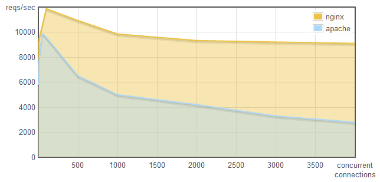

JavaScript as a Platform
Node.js, NPM and Grunt
About
{
"firstName" : "Bertrand",
"lastName" : "Chevrier",
"online" : {
"twitter" : "@kramp",
"github" : "github.com/krampstudio",
"blog" : "krampstudio.com"
},
"pro" : {
"employer" : "CGI",
"position" : "Technical expert"
},
"loves" : ["JavaScript", "Linux", "Java", "PHP"]
}
JS, OSS & me

Follow the dealer
krampstudio.com

github.com/krampstudio

Why Node.js
- Buzzword ?
- JS.everywhere(2013);
- JIFSNIF
JavaScript is fun so node is funnier
- Huge community
Platform Repo Total packages Platform years old Avg/year since platform Repo years old Avg/year since repo Python PyPI 31 066 22 1 412 10 3 106 Java Maven central 58 272 18 3 237 9 6 474 Ruby Gems.org 56 869 18 3 159 5 11 373 Node Npm 30471 4 7617 3 10 157 stats polled the 21st of May 2013
WTF is node.js ?
The illegitimate child of Google and Netscape !

2008, Ryan Dahl
How to build scalable real-time web app with simplicity ?
Architecture
node.js isn't
- A programming language
- A web framework
node.js is
- A low level lib for I/O programming
node.js design
- Non blocking I/O
- Event driven model
- JavaScript
- Unix philosophy
Inspiration
- Twisted (Python)
- Tornado (Python)
- EventMachine (Ruby)
- libevent (C)
- Nginx
Non blocking I/O
for scalability
Cost of I/O
| I/O | cycles |
| L1-cache | 3 |
| L2-cache | 14 |
| RAM | 250 |
| Disk | 41 000 000 |
| Network | 240 000 000 |
| http://blog.mixu.net/2011/02/01/understanding-the-node-js-event-loop | |
Threaded server

Non blocking server

memory usage / concurrent connections

request p. sec. / concurrent connections
Node is designed to be non blocking from top to bottom.
- Event driven model
- Low levels I/O APIs rewritten
- Fat process
JavaScript
for simplicity
Why JS?
The good parts for node
- Functionnal language : fits the event model
- Easily extensible : redesign of non blocking APIs, DSLable
- Becomes popular : the language of the web
Unix philosophy
KISS & Battery not included
Node provides only low level APIs
Nothing superfluous.
EcmaScript 5 + CommonJs + APIs:
- Cluster, Child_Process and Process
- Crypto
- Module, Domain, Events, Timers
- Assert, Utilities
- File System, Path, OS, VM
- HTTP, Net, URL, QueryString, etc.
- Net, DNS, UDP
- Buffer, Stream, STDIO, Readline, TTY
- REPL
nodejs.org/api
JavaScript (ES5) file import ?

Modules
module.exports = {
//your object
};
Require
var fs = require('fs');
Diving into node
Coding with node
Discovering the patterns
Required Hello Node.js world
var http = require("http");
http.createServer(function(request, response) {
response.writeHead(200, {"Content-Type": "text/plain"});
response.write("Hello World");
response.end();
}).listen(8888);
$ node hello_node_world.js
Demo : node-htop


Callbacks, Errorbacks
function async(data, callback) {
if (!data) {
callback(new Error('Empty data'));
}
//do something and then
callback(null, true);
};
async({data: 'test'}, function(err, valid){
console.log("finished");
});
Callback tree
http.createServer(function processRequest(request, response){
fs.exists("/tmp/test", function(exists){
if(exists === true){
fs.stat(file, function(err, stat){
fs.appendFile(file, log, 'utf8', function(err){
db.query(function(err, data){
//etc ...
});
});
});
}
});
}
Async management
var async = require('async');
var fs = require('fs');
async.filter(['file1','file2','file3'], fs.exists, function(results){
//results => [true, false, true]
});
function f1(cb){
fs.exists('dir1', function(result){
if(result === true){
cb(null, true);
} else {
cb(new Error('Oh crap!');
}
});
}
async.series([f1, f2], function(err, results){
// results => [true, true] or null
});
Futures and promises
var q = require('q'),
fs = require('fs');
var readFile = q.node(fs.readFile);
readFile('test.txt').then(function (data) {
console.log("finished");
}).then(function(){
console.log("do something else");
});
Events
var events = require('events');
var Test = function(){
events.EventEmitter.call(this);
};
util.inherits(Test, events.EventEmitter);
Test.prototype.start = function(){
this.emit('started', { 'when' : new Date() });
};
var myTest = new Test();
myTest.on('started', function(data){
console.log("test started");
});
myTest.start();
Middleware
var app = {
stack : [],
use : function(middleware){
var fn = middleware;
if('function' === typeof middleware.handle){
fn = middleware.handle;
}
if('function' === typeof fn){
this.stack.push(fn);
}
},
handle : function(data){
var i = 0, layer;
for(i in this.stack){
layer = this.stack[i];
if(!layer(data)){
break;
}
}
}
};
app.use(function(data){
console.log("Hello %s", data);
return true;
});
app.use(function(data){
console.error("Goodbye %s", data);
return false;
});
app.handle('middleware');
Connect : HTTP middlewares
var app = connect()
.use(connect.logger('dev'))
.use(connect.static('public'))
.use(function(req, res){
res.end('hello world\n');
})
.listen(3000);
Errors
try {
//something that crash
} catch(e) {
console.error(e);
};
function(cb){
if(error)
cb(new Error("Sorry..."));
} else {
cb(null, theData);
}
}
myEmitter.on('error', function(e){
console.error(e.stack);
});
var aDomain = domain.create();
aDomain.on('error', function(err){
//do wafyw with the err
});
aDomain.run(function(){
//do some errorable stuffs (throws, errbacks, etc. are catched)
});Scaling node.js
But, wait, I've only one process...
Scale Up
Use your CPUs
Cluster
var cluster = require('cluster');
var http = require('http');
var numCPUs = require('os').cpus().length;
if (cluster.isMaster) {
for (var i = 0; i > numCPUs; i++) {
cluster.fork();
}
cluster.on('exit', function(worker, code, signal) {
//manage worker stop
});
} else {
//I'm in a fork
} Scale out
- Load balance
- Share the events
Node Package Manager
NPM ?
- CLI tools
$ npm --help
- REST API registry.npmjs.org
- Web site npmjs.org
- Packages as CommonJS modules
- Included in node.js since 0.6
package.json
{
"name": "node-htop",
"version": "0.1.0",
"description": "Web htop like",
"main": "app.js",
"scripts": {
"test": "grunt test"
},
"dependencies": {
"express": "3.2.x",
"socket.io": "0.9.x",
"underscore": "~1.4.0"
}
}
Usage
$ npm search bower
$ npm info bower
$ npm install -g bower
$ npm install --save socket.io
$ npm update
$ npm publish
Details
Package
- name@version
- git friendly
Scopes
- global -> user -> project
- main, dev, peer
Transitive dependencies
A-0.1 -> B-0.1, C-0.1
B-01 -> C-0.2
A-0.1
├── node_modules
│ ├── B-0.1
│ │ └── node_modules
│ │ └── C-0.2
│ └── C-0.1
└── package.json
Why does npm hate me?
npm is not capable of hatred. It loves everyone, especially you.
source npm faq
Node.js is fun but...
Defects
- Young project
- Libraries hell
- Error management
- Monoculture
- Noob friendly
- Devops required
Node is a cancerTed Dzubia
With great power, comes great responsibilityUncle Ben, Spiderman
Grunt, the task runner
Automate your projects
- Task based
- By configuration
Gruntfile.js - NPM friendly
- Extensible by nature
Let's do some Grunt
Why Grunt?
- Wide numbers of plugins
- Simple to use
- Easy to customize
- 0.5 : will use the
node-taskformat
Grunt in your stack

=

demo
slide decks